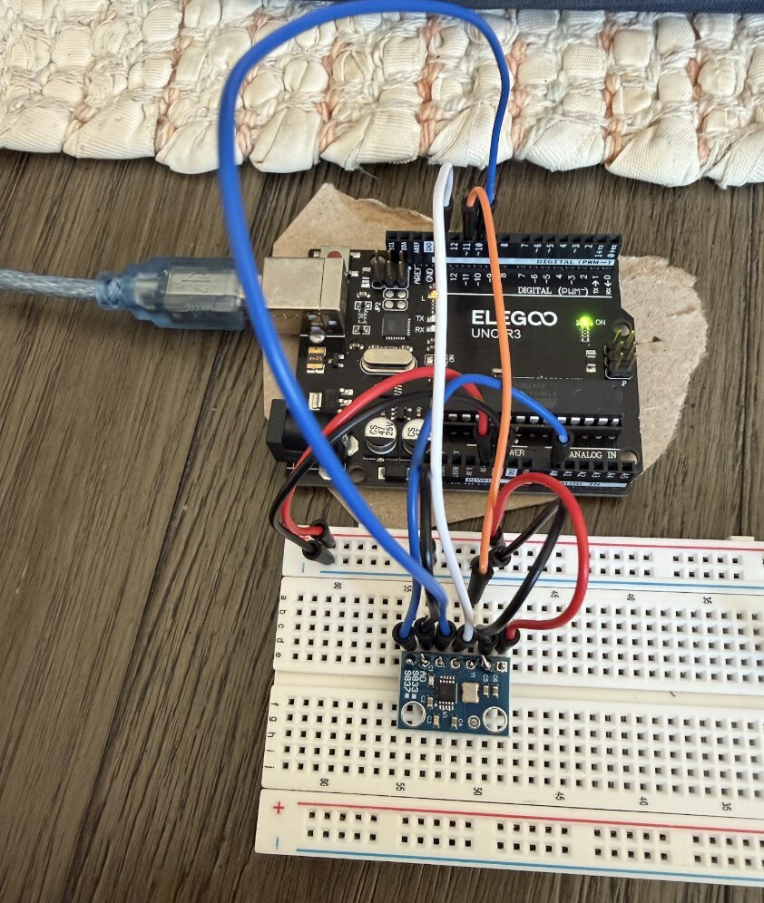
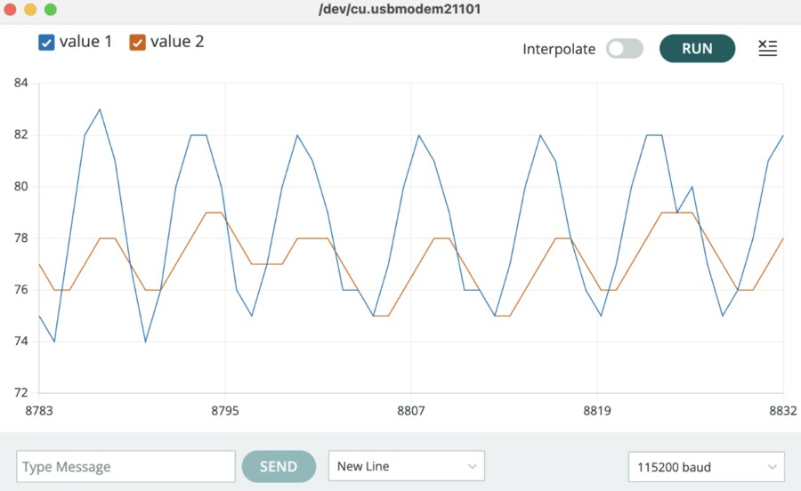
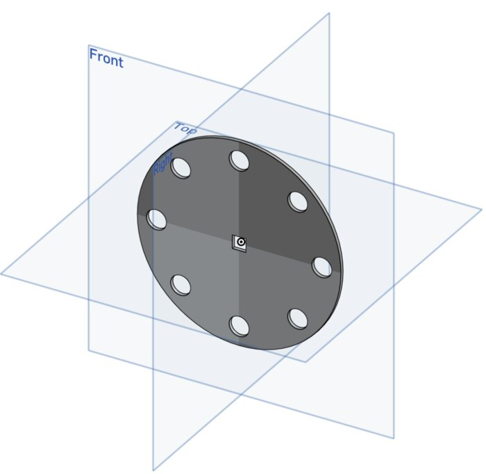
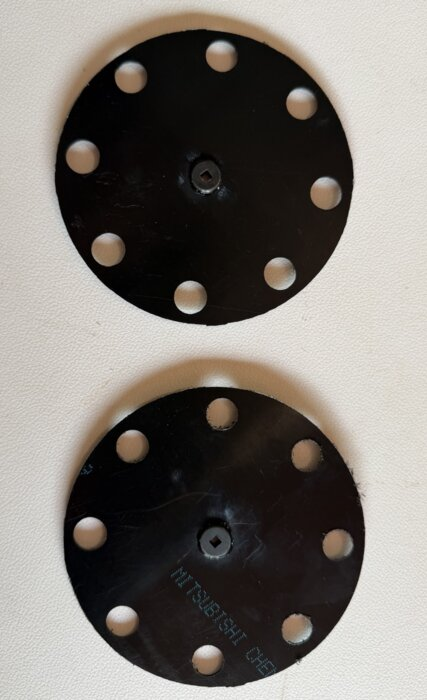
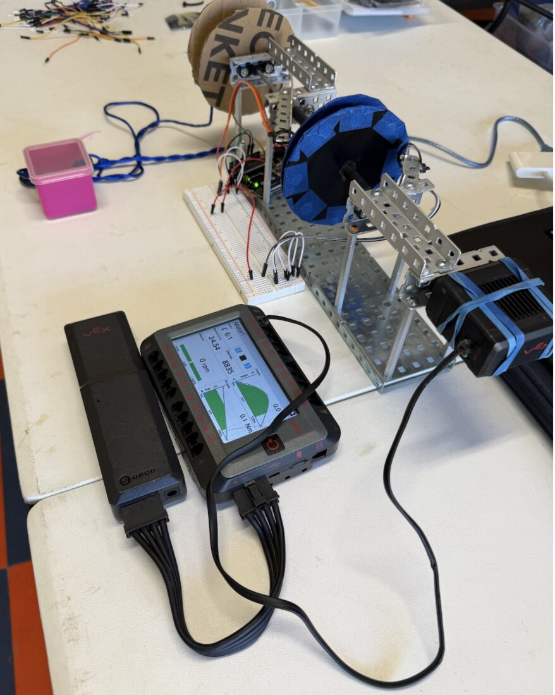
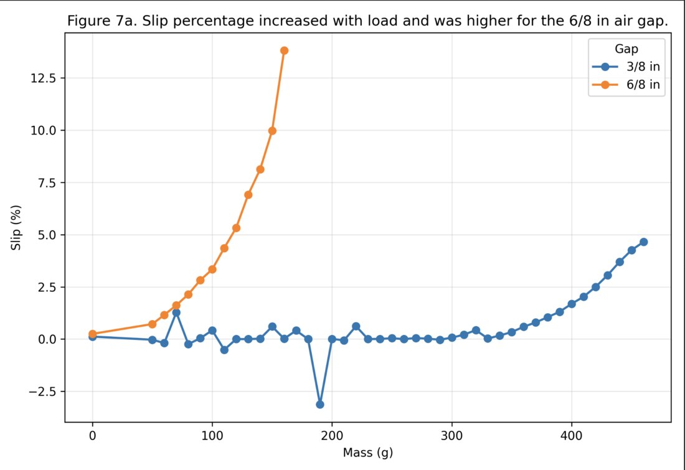

Four ongoing research threads, spanning applied ML, embedded signal acquisition, and electromechanical design — three of them with full code, data, and figures on GitHub, so the numbers below can be checked against the actual notebooks and firmware rather than taken on faith.
Chest X-Ray Classification (AI/ML)
Built a three-class chest X-ray classifier — Normal / Pneumonia / Tuberculosis — on roughly 25,500 images. A pretrained CNN backbone extracts features, which are then passed to three different classifier heads (KNN, Random Forest, and MLP) tuned across a 300+ configuration hyperparameter sweep, evaluated under both a baseline and an augmented training regime. The MLP came out on top in both, and the baseline MLP reached 78.8% accuracy on the held-out test set.
The more important result wasn't that headline number — it's what the per-class breakdown showed underneath it. Pneumonia recall was nearly perfect (0.998), but Tuberculosis recall was only 0.63, meaning roughly 37% of actual TB cases were missed, despite TB being the class where a missed diagnosis carries the highest clinical cost. TB precision was a perfect 1.00 — when the model did predict TB, it was always right — which points to the model being systematically too conservative, defaulting ambiguous cases to "Normal" rather than committing to a TB call. A model that's "78% accurate" can still be quietly worse at detecting the highest-cost class, and a single accuracy number will never surface that. That reframed the whole evaluation approach around per-class precision/recall and the confusion matrix instead of top-line accuracy.

Baseline MLP, test set — the Tuberculosis row shows the missed cases
Tech stack: Python · PyTorch (feature extraction) · scikit-learn (KNN / Random Forest / MLP) · Augmentor · pandas · matplotlib
Low-Cost Arduino-Based Oscilloscope
Upper-limb prostheses have gotten better in mechanics and actuation, but control is still one of the biggest obstacles to making them intuitive and affordable — clinical devices lean on EMG-based control, and cost is a documented barrier to access and repair. This project doesn't attempt EMG/EEG acquisition directly; it addresses the upstream problem those systems depend on: reliably acquiring, sampling, and visualizing low-amplitude analog signals on inexpensive, accessible hardware, as a signal-visualization platform for future biosignal work.
Built around an Arduino Uno, validated first with a simple potentiometer, then against a controlled AD9833 waveform generator swept from 1 Hz to 10 kHz. Switching the ADC from the default 5V reference to the internal 1.1V reference moved the usable signal from ~75-85 counts up to ~310-344 counts — a meaningful jump in effective resolution. A dedicated timing test measured the system's effective sampling rate at ≈8.93 kS/s, giving an estimated Nyquist limit of ≈4.47 kHz: above that, amplitude was still detectable but waveform shape could no longer be trusted as a faithful reconstruction. The platform was then extended to accept real external audio through a 3.5mm AUX jack via an AC-coupled biased input stage, and cleanly picked up a 200Hz test tone scaling with source volume.


Tech stack: Arduino Uno R3 · AD9833 DDS module (SPI) · Arduino Serial Plotter
Contactless Magnetic Transmission — Torque Transfer & Slip Behavior
A small-scale contactless magnetic transmission: two coaxial rotor disks, each ringed with alternating-polarity permanent magnets, transfer rotational motion across an air gap with no physical contact. The motivation came from prosthetic and assistive-device joints, where excessive torque can damage internal components or create safety risks — a magnetic coupling is an interesting safety mechanism because its failure mode isn't destructive. If the load exceeds the maximum transmissible torque, the rotors lose synchronization and slip, then reengage once the load drops or the rotors realign, with no broken teeth or parts to replace, unlike a rigid geartrain. Research question: how does air gap distance affect torque transfer, slip behavior, and load capacity?
The prototype used two 4-inch CNC-cut disks, each with eight N52 neodymium magnets in alternating polarity, driven by a motor on the input side with the output side connected to a hanging-mass load. Two Hall effect sensors, interrupt-driven off an Arduino, measured input and output RPM to compute slip percentage in real time. Two air gaps were tested — 3/8 in and 6/8 in:
| Air Gap | Max No-Slip | First Slip | Complete Failure |
|---|---|---|---|
| 3/8 in | 290 g | 300 g | 470 g |
| 6/8 in | 60 g | 70 g | 170 g |
Doubling the air gap dropped the first-slip mass from 300g to 70g and the failure mass from 470g to 170g, confirming a smaller gap transmits more torque before slipping. A simplified point-dipole magnetic model predicted roughly a 16× drop in force between the two gaps, but measured failure torque only dropped about 2.8× — the model overpredicted absolute failure torque substantially, consistent with the 3/8 in gap being smaller than the magnets themselves and well into near-field territory, where that approximation is known to break down. Qualitatively, the most notable result: around 310g at the 3/8 in gap, the system lifted the mass, slipped after reaching a certain height, dropped slightly, and re-locked — a passive overload response with nothing broken.



Full prototype, mid-test — the VEX controller is displaying live torque/RPM readout

Slip rose sharply past each gap's failure threshold — steeper and earlier for the wider 6/8 in gap
Tech stack: Arduino · Hall effect sensors (interrupt-driven) · CNC-cut rotor disks · N52 neodymium magnets
AI-Assisted Communication Research
Student researcher on an fMRI-AI study developing methods to decode intended communication from neural signal data, working toward assistive communication technology for patients who have lost the ability to speak or move. Currently under review for publication. This one draws on institutional/clinical data rather than a personal codebase, so there's no public repo for it.